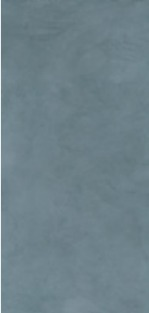
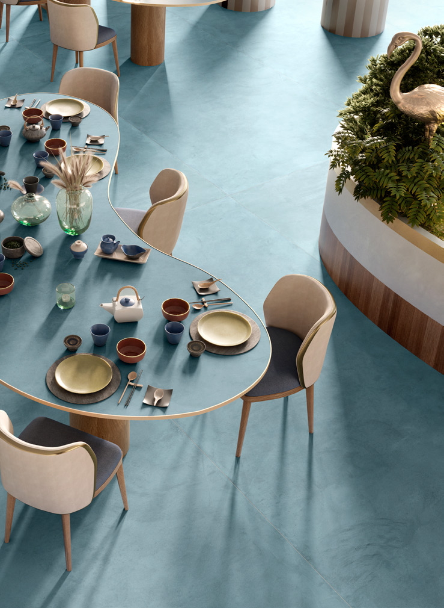
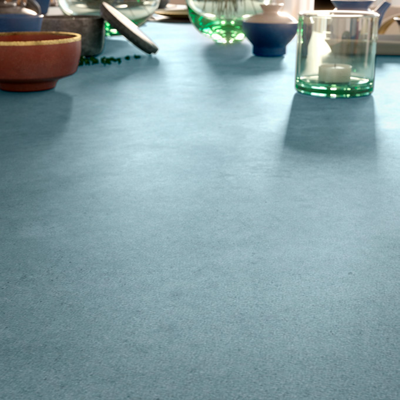
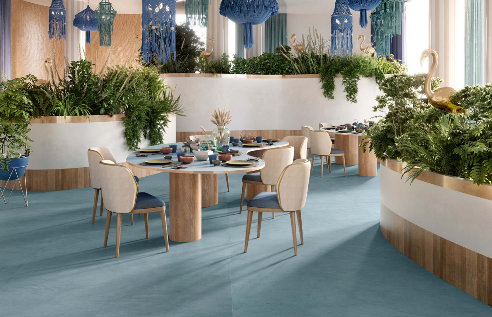

Với hình thái liền mạch và tông màu trầm ấm, Terre mang đến sự đồng nhất và công năng cho không gian sống, tạo nên những nơi chốn thoải mái, gần gũi với con người. Bộ sưu tập gồm nhiều sắc thái từ đất nung, hồng đất, than chì, xám, đến be, cà phê sữa và moka. Đá nung kết Vasta Stone Terre mã TERRE-OTTANIO, khổ lớn 160x320cm, bề mặt polished matt | polished.
Đá nung kết Vasta Stone Terre Ottanio 160x320
Đá nung kết ốp lát khổ lớn với kích thước 160x320, bề mặt polished matt | polished.
Đã cập nhật danh sách yêu thích.
DANH MỤC: Gạch
MÃ SẢN PHẨM: TERRE-OTTANIO
LOẠI SẢN PHẨM: Đá nung kết ốp lát khổ lớn
XƯƠNG GẠCH: Đá nung kết
KÍCH THƯỚC: 160x320
BỀ MẶT MEN: Polished Matt | Polished
HÃNG SẢN XUẤT: Vasta Stone
ỨNG DỤNG: Sàn, Tường
QUY CÁCH ĐÓNG GÓI: Đang cập nhật
GIÁ: Liên hệ
ĐỘ DÀY: 6mm, 12mm, 20mm
BỘ SƯU TẬP: Terre
Với hình thái liền mạch và tông màu trầm ấm, Terre mang đến sự đồng nhất và công năng cho không gian sống, tạo nên những nơi chốn thoải mái, gần gũi với con người. Bộ sưu tập gồm nhiều sắc thái từ đất nung, hồng đất, than chì, xám, đến be, cà phê sữa và moka. Đá nung kết Vasta Stone Terre mã TERRE-OTTANIO, khổ lớn 160x320cm, bề mặt polished matt | polished.
DANH MỤC: Gạch
MÃ SẢN PHẨM: TERRE-OTTANIO
LOẠI SẢN PHẨM: Đá nung kết ốp lát khổ lớn
XƯƠNG GẠCH: Đá nung kết
KÍCH THƯỚC: 160x320
BỀ MẶT MEN: Polished Matt | Polished
HÃNG SẢN XUẤT: Vasta Stone
ỨNG DỤNG: Sàn, Tường
QUY CÁCH ĐÓNG GÓI: Đang cập nhật
GIÁ: Liên hệ
ĐỘ DÀY: 6mm, 12mm, 20mm
BỘ SƯU TẬP: Terre